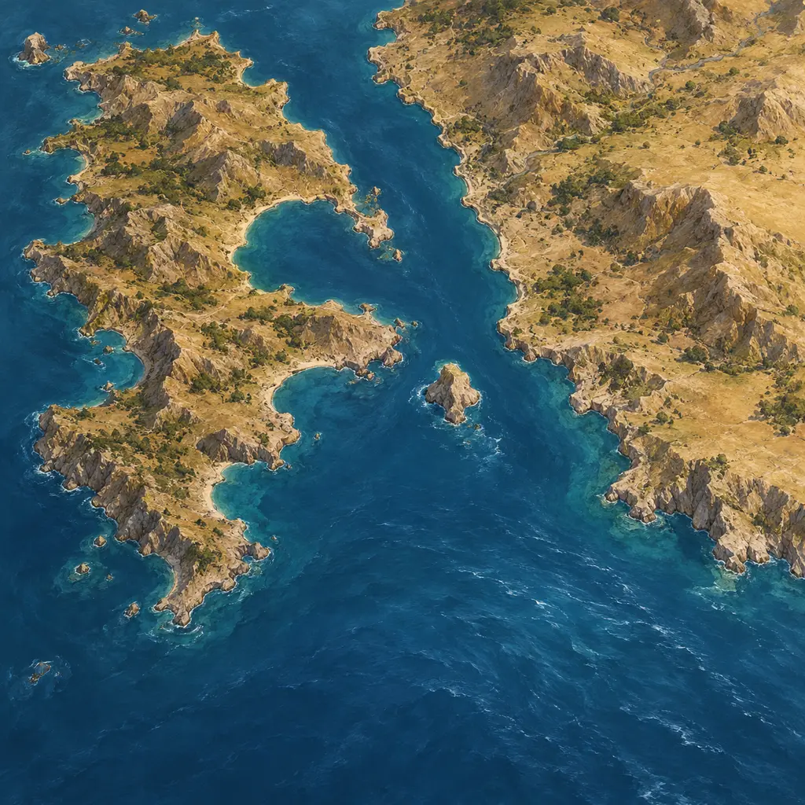
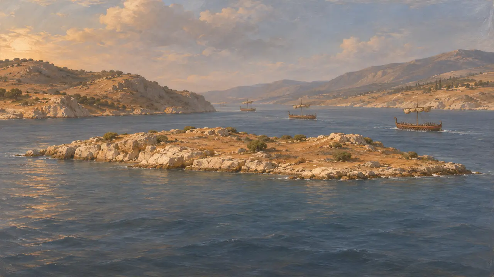
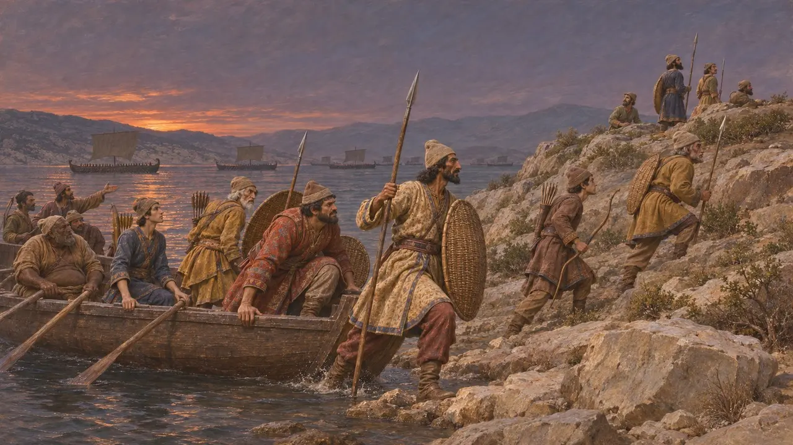
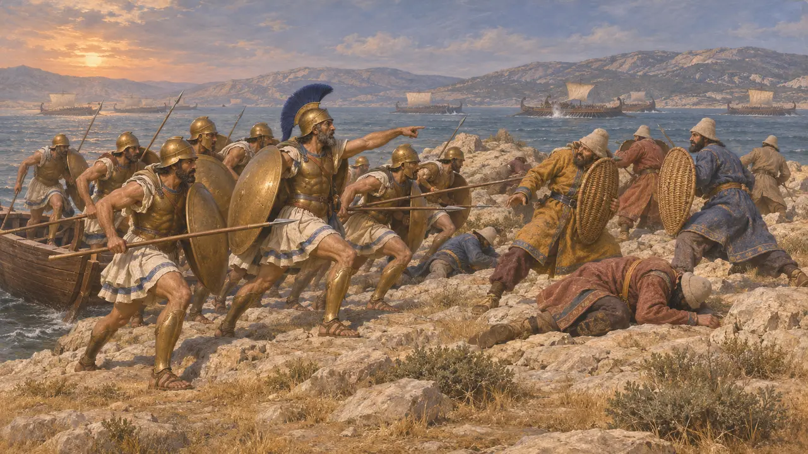
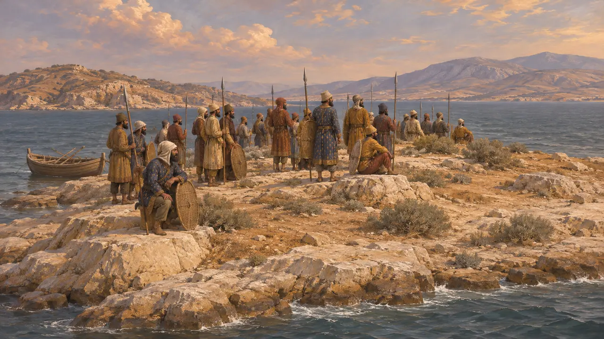

Пситталея
Островок в Саламинском проливе, на который в 480 г. до н. э. высадили персов
Пситталея — небольшой скалистый островок в проливе между Саламином и материковой Аттикой. Перед морским сражением при Саламине в 480 г. до н. э. туда высадили персов. И Геродот, и Эсхил сообщают, что отряд был уничтожен греческими воинами, а Геродот называет Аристида тем, кто возглавил нападение.
В игре: Пситталея упоминается только в Летописи и в статьях о событиях при Саламине и не имеет собственной игровой механики. Замечание игры о том, что Аристид перебил там персов, сжимает рассказ Геродота, у которого он для этого высаживает афинских гоплитов.

Где находится островок
Античное свидетельствоГеродот помещает Пситталею в проливе между Саламином и материком, на линии, по которой шли флоты. Эсхил в трагедии «Персы» описывает её как небольшой остров близ Саламина и делает её местом persидской катастрофы. Оба автора знали эти воды и события — лично или по рассказам очевидцев.
Herodotus 8.76; Aeschylus, Persians 447-464

Высадка персов
Античное свидетельствоГеродот сообщает, что ночью, когда персидский флот выдвигался, чтобы перекрыть пролив, на Пситталию высадили людей. Целью он называет удержание островка, к которому, как можно было ожидать, прибьёт обломки кораблей и плывущих людей. Их числа он не указывает. Павсаний, писавший гораздо позже, называет цифру около 400 г. до н. э.
Herodotus 8.76; Pausanias 1.36.2

Атака греков
Античное свидетельствоГеродот говорит, что Аристид, сын Лисимаха, во время морского сражения переправил на островок отряд афинских гоплитов и перебил там персов. Эсхил тоже описывает, как греки уничтожили персидский отряд на острове. Плутарх повторяет это предание, называя Аристида командующим.
Herodotus 8.95; Aeschylus, Persians 447-464; Plutarch, Aristides 9

Что оставляют открытым источники
СпорныйВсе свидетельства греческие, и ни один персидский текст не упоминает этот островок. Число высадившихся, их ранг и точную роль Аристида невозможно проверить по каким-либо независимым источникам. Павсаний писал спустя века, поэтому его цифру лучше считать преданием, а не подсчётом.
Herodotus 8.95
Источники
- Herodotus 8.76
- Herodotus 8.95
- Aeschylus, Persians
- Plutarch, Aristides
- Pausanias 1.36.2